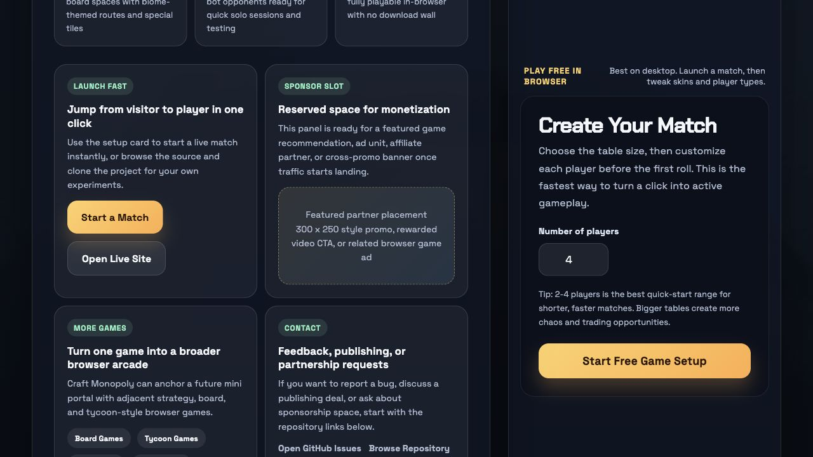

Want the rules?
Open the beginner guide if you want the clear step-by-step version first.
Read how to playCraft Monopoly pairs a Minecraft-inspired, blocky 3D look with a fast property strategy game. It is a standalone browser game—not a Minecraft mod or sandbox. Roll across the board, claim biome plots, build upgrades, and try to outlast local players or AI.

Voxel characters and chunky terrain make ownership easy to read at a glance. Each biome has its own color and atmosphere, so the 3D board communicates where the action is while you focus on dice, rent, and cash.
You get a 28-space property board, local pass-and-play for 2–10 seats, optional AI opponents, property upgrades, random events, and an escalating endgame economy.
No. It is a standalone browser game with Minecraft-inspired visual styling.
Yes. The game loop is centered on dice, movement, buying property, and collecting rent.
No. It is designed for direct browser access.
The homepage shows the real screenshots and the live setup flow if you want to jump straight into play.